Computer Vision III (IN2375) — Notes 2: Object Tracking
本文笔记中英混杂，因为期末考试纯英文方便记忆，解释部分用中文方便理解
这篇笔记从motivation出发，先用Bayesian tracking和graphical model给tracking 一个概率框架，然后讲单目标的online tracking（GOTURN、MDNet）。进入多目标后 tracking变成association问题：第一种approach是motion model加bipartite matching，第二种是Tracktor直接把detector当tracker，配合metric learning 和ReID提供appearance线索。之后是offline的graph-based MOT：cost-flow network、MAP formulation、如何learn costs，最后走到message passing networks。收尾讲MOT evaluation。
1. Motivation
为什么要做tracking：
- 建造一个世界的动态模型，理解where/what objects以及object如何move
- 预测未来的运动（比如行人是否会穿越马路）
- 仅凭外观无法辨别物体时辅助object detection（to facilitate object detection when appearance alone is insufficient）
我们的目标是：给出t帧时的observation，建立目标检测与时序关联模型，找到它们与 第t+n帧观测结果的对应关系。
挑战有：fast motions、changing appearance、changing object pose、 dynamic backgrounds、occlusions、poor image quality等等。
一个简单的想法是tracking by detection，即detect the object in every frame， 例如Eigenfaces（Turk & Pentland, "Face recognition using eigenfaces"）。如果 场景中只有一个人、且该人始终保持正面朝向，我们可以采用基于sliding window的 模板匹配方法（例如使用人脸的PCA模型）。但我们不希望搜索整幅图像，因为这种 做法效率低下，所以可以利用上一帧中的位置信息来限定搜索范围。
但问题是many objects may be present, and the detector may misfire，我们不知道 哪一个detection对应哪一个物体。
Idea: we could use the motion prior，也就是用运动的先验知识来约束关联。
2. Bayesian tracking and graphical models
2.1 Illustration: tracking a car
先看一个直觉的例子（[Michael Black]）：目标是估计每个时刻白色汽车的位置， observation是image sequence加上已知的background。
Background extraction：background在所有帧里几乎是恒定的，所以它可以用 一个low-rank近似很好地表示。具体做法：
- 视频分辨率60×80，113秒，10fps
- 把每帧unroll成1×4800的向量
- 堆成11300×4800的矩阵，做SVD取low rank部分
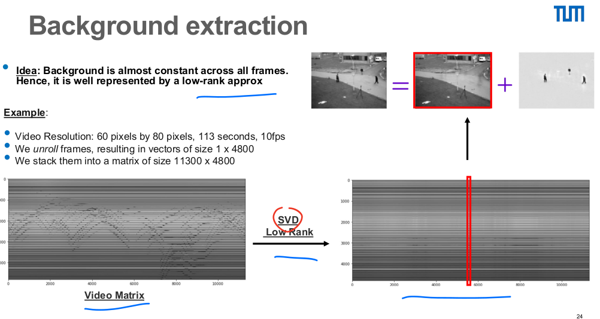
拿到background之后做background subtraction，得到可能是车的binary map。 但是哪一个才是我们要跟踪的那辆车？这就需要贝叶斯框架：
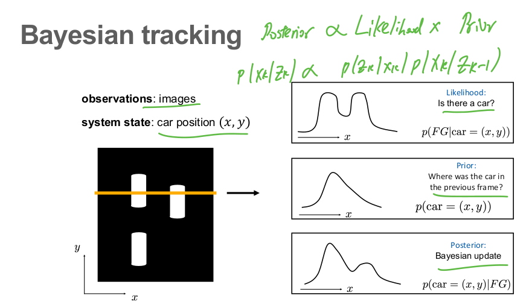
三个要素：
- Likelihood：这里有车吗？\(p(FG \mid \text{car} = (x,y))\)
- Prior：上一帧车在哪里？\(p(\text{car} = (x,y))\)
- Posterior：Bayesian update的结果 \(p(\text{car} = (x,y) \mid FG)\)
2.2 Notation
- \(x_k \in \mathbb{R}^n\)：第k帧的internal state（hidden random variable， 比如物体在图像中的位置）。\(X_k = [x_1, x_2, \dots, x_k]^\top\) 是到时刻k的历史
- \(z_k \in \mathbb{R}^m\)：第k帧的measurement（observable random variable， 比如给定的图像）。\(Z_k = [z_1, z_2, \dots, z_k]^\top\) 是观测历史
目标：估计posterior probability \(p(x_k \mid Z_k)\)。
怎么做？ 一个想法是recursion：\(p(x_{k-1} \mid Z_{k-1}) \to p(x_k \mid Z_k)\)。 但要实现recursion，需要哪些assumptions？
2.3 Bayesian graphical model
答案是用Hidden Markov Model（HMM）：
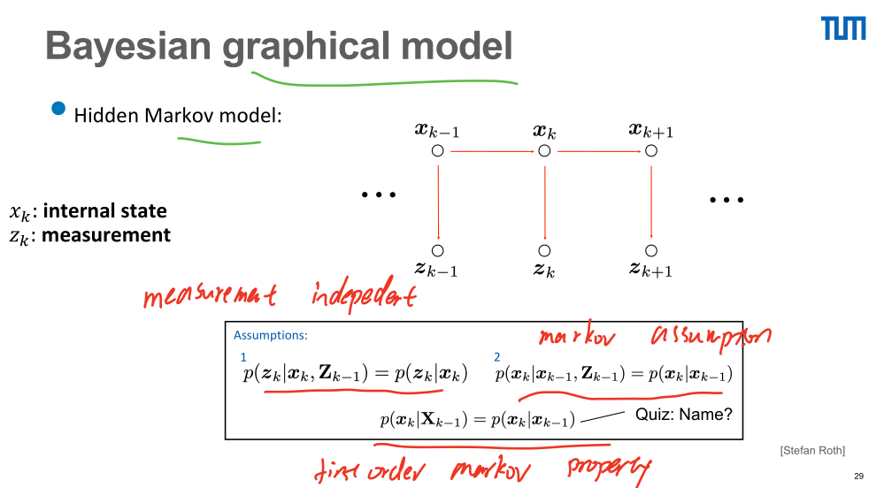
两个assumption：
- Measurement independence：\(p(z_k \mid x_k, Z_{k-1}) = p(z_k \mid x_k)\)， 即当前观测只取决于当前状态
- Markov assumption：\(p(x_k \mid x_{k-1}, Z_{k-1}) = p(x_k \mid x_{k-1})\)， 即当前状态只取决于上一个状态
QUIZ\(p(x_k \mid X_{k-1}) = p(x_k \mid x_{k-1})\) 这个性质叫什么？
First-order Markov property（一阶马尔可夫性）：只考虑前一个状态。
2.4 Recursive estimation
有了这两个假设，就可以推导recursion：
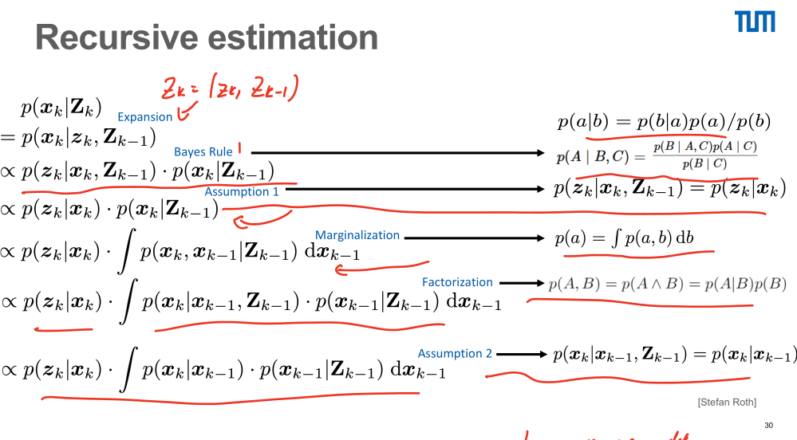
推导链条（每一步用到的规则标在右边）：
2.5 Bayesian formulation (Bayes filter)
最终得到Bayes filter：
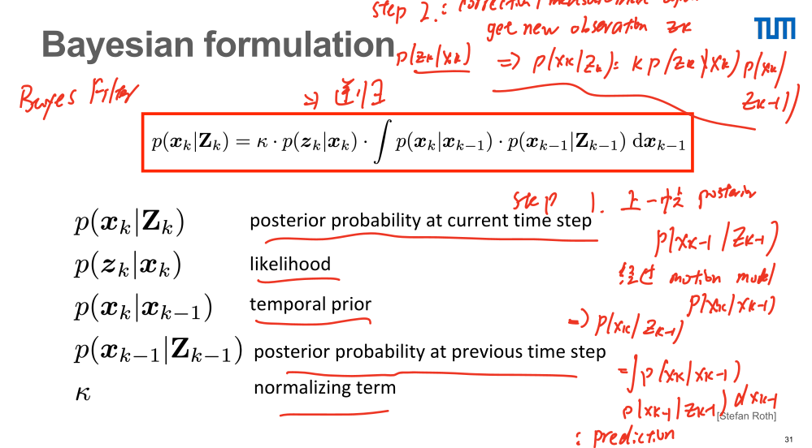
逐项解释：
- \(p(x_k \mid Z_k)\)：当前时刻的posterior probability
- \(p(z_k \mid x_k)\)：likelihood（观测模型）
- \(p(x_k \mid x_{k-1})\)：temporal prior（motion model）
- \(p(x_{k-1} \mid Z_{k-1})\)：上一时刻的posterior
- \(\kappa\)：normalizing term
它其实是两步：
- Step 1（prediction）：拿上一时刻的posterior \(p(x_{k-1} \mid Z_{k-1})\)， 通过motion model \(p(x_k \mid x_{k-1})\) 积分推到当前，得到 \(p(x_k \mid Z_{k-1})\)
- Step 2（correction/update）：拿到新观测 \(z_k\) 之后，用likelihood \(p(z_k \mid x_k)\) 修正，得到 \(p(x_k \mid Z_k)\)
2.6 Estimators
假设posterior已知，怎么给出一个具体的估计？
- Posterior mean：\(\hat{x}_k = E(x_k \mid Z_k) = \int x_k\, p(x_k \mid Z_k)\, dx_k\)， 对应minimum mean squared error
- Maximum a posteriori (MAP)：\(\hat{x}_k = \arg\max_{x_k} p(x_k \mid Z_k)\)， 取概率最大的那个点
posterior是多峰分布时两者会给出不同答案（图右侧）。
2.7 Deep networks in this framework
网络的输入输出很容易看出来，但更有用（也更难）的是理解一个网络在Bayesian formulation里建模了什么（比如它怎么建模temporal prior）。
通常网络被要求直接产生MAP：
也就是说不建模实际的state distribution，直接回归一个点估计。这是深度 tracker和经典贝叶斯滤波（如Kalman filter）最大的区别。
3. Single-object online tracking
3.1 Online vs offline tracking
- Online tracking："given observations so far, estimate the current state"
- Offline tracking："given all observations, estimate any state"
- 一个online模型也可以用于offline，我们的recursive Bayesian model照样成立
Online tracking：
- 一次处理两帧
- 适合real-time应用
- prone to drifting，从错误或遮挡中恢复很困难
Offline tracking：
- 处理一批帧，需要整段视频（或一个clip）
- 不适合real-time
- 善于从遮挡中恢复（短遮挡，后面会看到）
- 适合video analysis
3.2 GOTURN
Held et al., 2016。最直接的深度单目标 tracker：
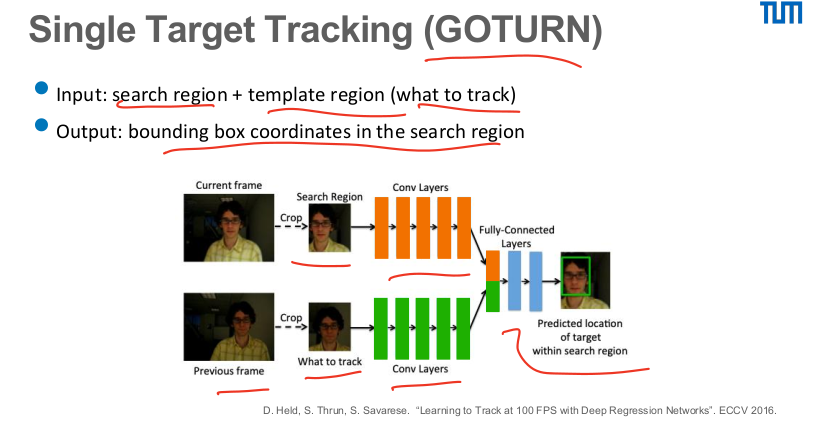
- Input：search region（当前帧裁剪出来的区域）+ template region （上一帧的物体，即what to track）
- Output：bounding box coordinates in the search region
- 两路conv提特征，concat后过FC直接回归box坐标
因为只是一次前向，所以非常快（100 FPS）。
3.3 MDNet
Nam & Han, 2016，思路完全不同：
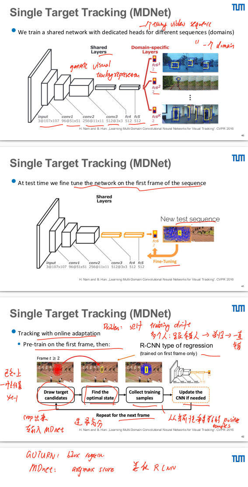
- 训练：shared layers学generic visual tracking representation， 每个训练视频（domain）配一个domain-specific的fc6头（K个domain就K个头）
- 测试：遇到新序列时，在第一帧上fine-tune一个新的fc6
- Online adaptation：\(t \ge 2\) 的每一帧，draw target candidates（在上一个 位置附近crop出很多候选）→ find the optimal state（选分最高的）→ collect training samples → update the CNN if needed，然后repeat for the next frame
对比一下两者的本质：GOTURN是box regression，MDNet是argmax over候选 （本质上是R-CNN式的分类）。
MDNet的online adaptation有个问题：self-training drift。因为伪标签来自 模型自己，一旦某一帧跟错了人（比如跟到旁边的路人），错误会被当成正样本 学进去，之后就一直错下去。这个思路在 note 4的semi-supervised章节里叫self-training， OnAVOS用的是同一套机制。
4. Multi-object tracking as association
多物体的情况下，问题变成：哪个detection对应哪条轨迹。
4.1 Approach 1: motion model + bipartite matching
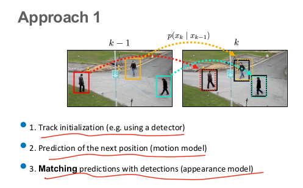
三步：
- Track initialization（比如用一个detector）
- Prediction of the next position（motion model，就是2.5里的temporal prior \(p(x_k \mid x_{k-1})\)）
- Matching predictions with detections（appearance model）
第3步就是bipartite matching（二分图匹配）：
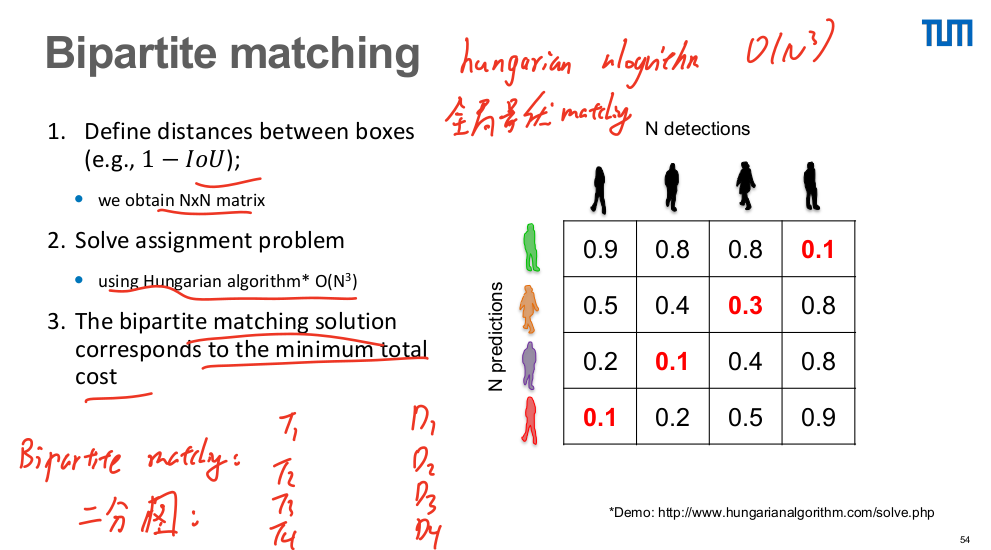
- 定义box之间的distance（比如 \(1 - IoU\)），得到一个N×N矩阵
- 用Hungarian algorithm求解assignment problem，复杂度 \(O(N^3)\)
- bipartite matching的解对应最小总代价的全局匹配
这里的Hungarian algorithm和note 4里DETR用来 匹配prediction和GT的是同一个算法。
问题1：如果少了一个detection怎么办？（物体被遮挡、检测器漏检）
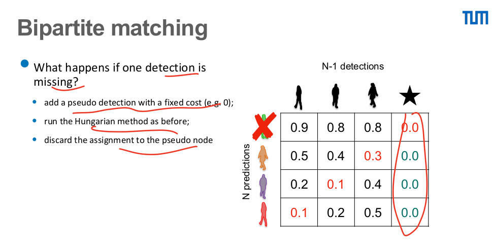
解决办法：加一个pseudo detection，代价固定（比如0）；照常跑Hungarian； 最后丢弃分配到pseudo node的结果。
问题2：如果没有合适的prediction怎么办？（比如物体离开画面，或者出现了 新物体）
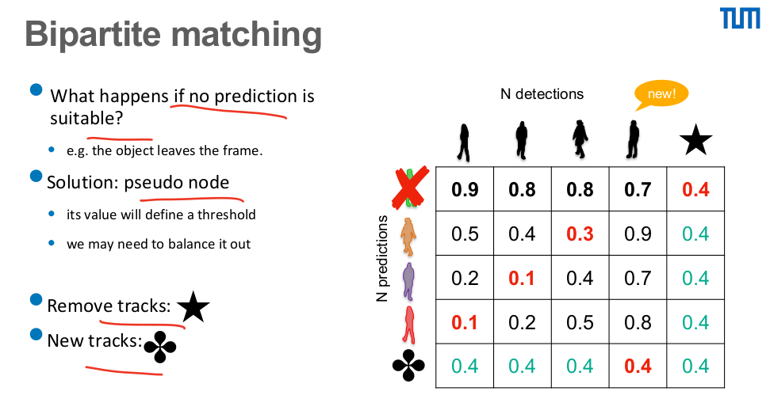
同样用pseudo node：它的值定义了一个threshold（代价比它还高的匹配 宁可不匹配），需要仔细balance。于是：
- Remove tracks：匹配到★（pseudo detection）的轨迹被终止
- New tracks：匹配到♣（pseudo prediction）的detection初始化为新轨迹
4.2 Approach 2: Tracktor
Bergmann et al., 2019， "Tracking without bells and whistles"。核心洞察：detector的bounding box regression head本身就能当tracker用。
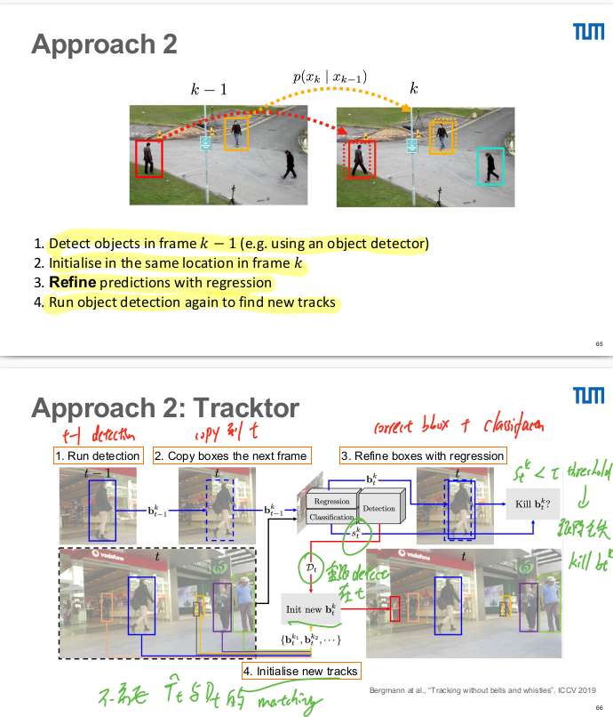
四步：
- 在第 \(k-1\) 帧detect objects（用一个object detector）
- 把box copy到第 \(k\) 帧的同一位置
- 用detector的regression head refine这些box（把框"拉"到物体的新位置）， 同时classification score \(s_t^k\) 低于阈值 \(\tau\) 的框被kill掉（说明物体 消失或被遮挡）
- 再跑一次object detection，把没有被已有轨迹覆盖的新检测初始化为new tracks
妙处在于：完全不需要训练任何tracking-specific的东西，纯靠一个现成的 detector就打败了当时很多专门设计的tracker。这也印证了 note 4里ByteTrack的那个结论：MOT的第一要素 是检测质量。
4.3 Metric learning and ReID
上面的matching还需要appearance model：怎么判断两个crop是不是同一个人？ 这类问题都可以归结为metric learning：
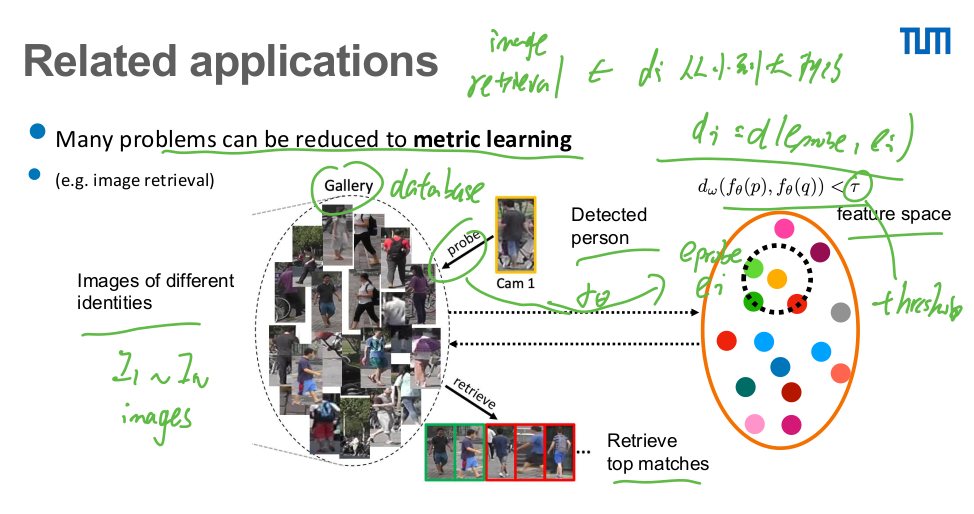
以image retrieval为例：gallery里是不同identity的图片，给一个probe（比如 Cam 1检测到的人），我们希望在feature space里 \(d_\omega(f_\theta(p), f_\theta(q)) < \tau\) 的就是同一个人，从而retrieve top matches。在MOT里这就是re-identification（ReID）。
目标：学一个embedding \(f_\theta\)，使得 \(d(A, B; \theta) < d(A, C; \theta)\)， 其中 \((A,B)\) 是positive pair、\((A,C)\) 是negative pair。
第二次尝试的loss：
其中 \(S^+\)、\(S^-\) 是positive和negative pair的集合。但这个loss有问题： negative distance可以无限增大，导致 \(\mathcal{L} \to -\infty\)。所以需要 margin。
Hinge loss（Chopra et al., 2005）： 对positive pair无界、对negative pair有界：
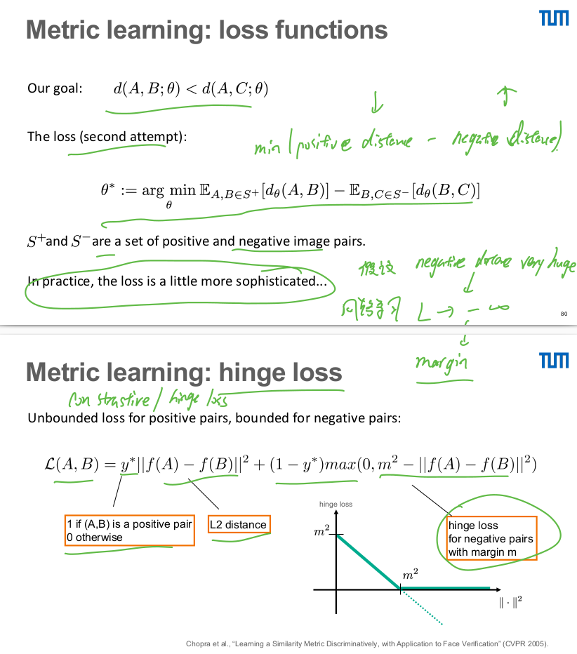
- \(y^* = 1\) if \((A,B)\) is a positive pair, 0 otherwise
- 第一项是positive pair的L2距离（越近越好，无界）
- 第二项是negative pair的hinge loss with margin \(m\)：一旦推开超过 margin就不再有惩罚
Triplet loss：把不等式 \(d(A,B;\theta) < d(A,C;\theta)\) 直接写进一个 loss term：
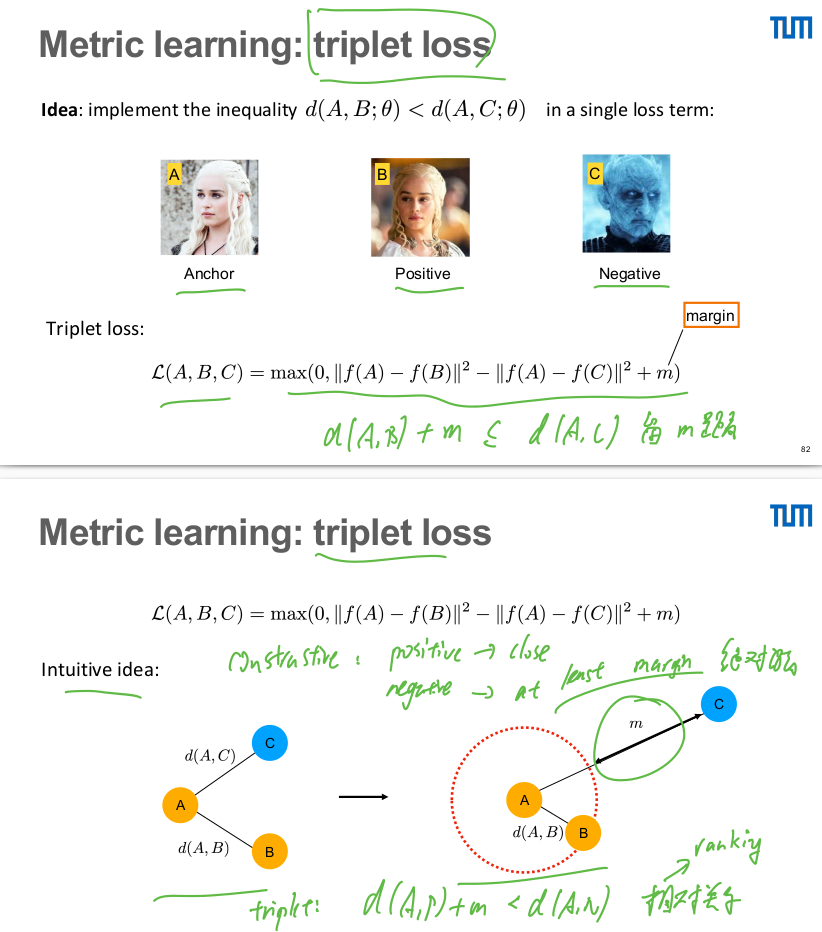
三元组是anchor \(A\)、positive \(B\)、negative \(C\)。直觉：positive要拉到 anchor附近，negative至少要推到margin之外，也就是要求 \(d(A,P) + m \le d(A,N)\)，本质上是一个ranking（排序）约束而不是绝对 距离约束。
这套metric learning就是note 4第2章 contrastive learning的前身，区别只是那里的positive pair来自 data augmentation（不需要标签），这里来自identity标签。
这一节小结：
- Bayesian tracking（一个general的框架）
- Deep single object trackers：GOTURN、MDNet（online adaptation）
- Tracking by detection：data association problem、bipartite matching
- Metric learning：hinge loss和triplet loss
5. Graph-based MOT (offline)
上面的方法都是逐帧做关联（online）。如果我们能拿到整段视频，就可以做 全局最优的关联，这就是offline的graph-based MOT。
5.1 Tracking with network flows
把问题建成图：
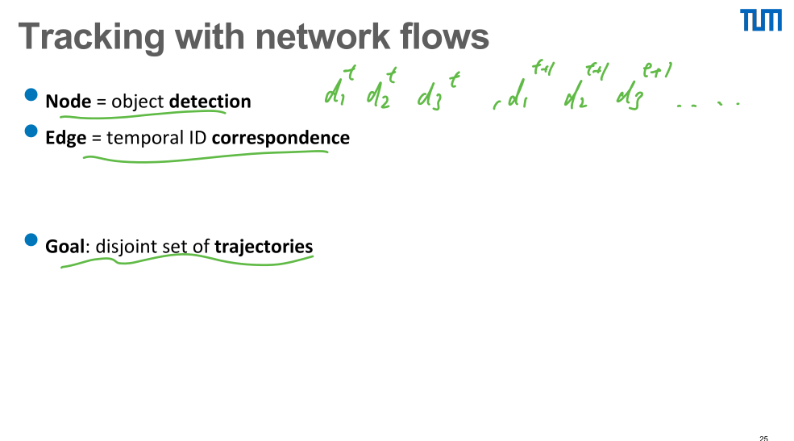
- Node = object detection（\(d_1^t, d_2^t, d_3^t, d_1^{t+1}, \dots\)）
- Edge = temporal ID correspondence（两个detection是同一个物体）
- Goal：找到一组disjoint set of trajectories（互不相交的轨迹）
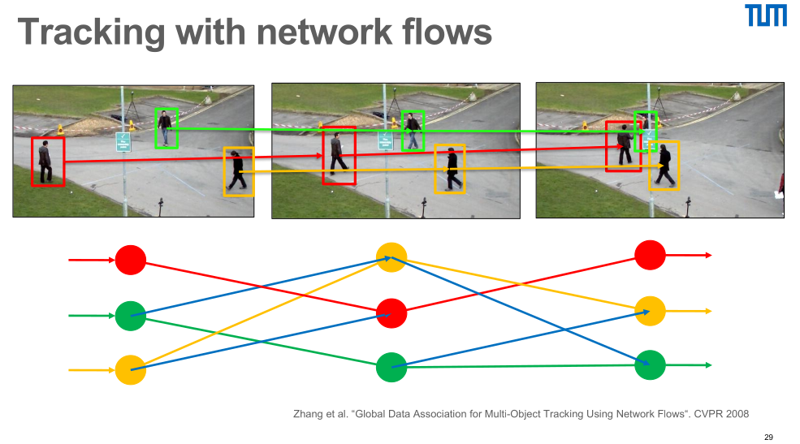
这被建模成minimum-cost maximum-flow problem："determine the maximum flow with a minimum cost"，其中1 unit of flow = 1 pedestrian：
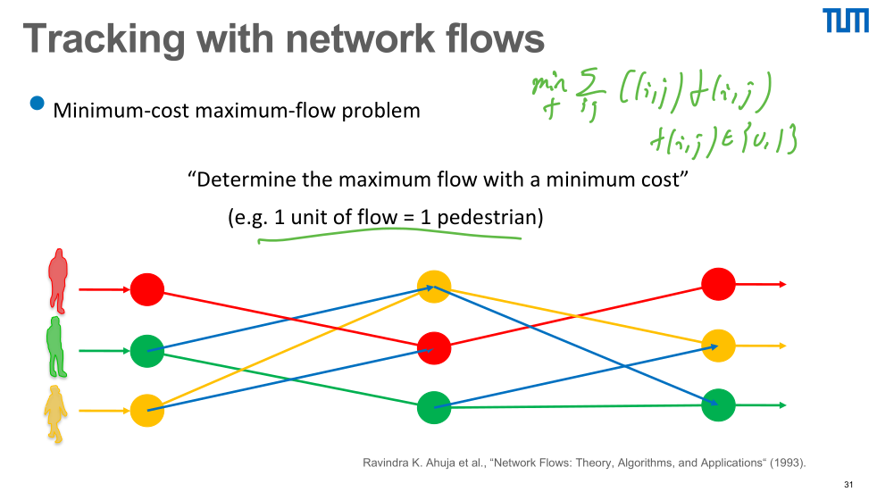
优化目标：
- \(C(i,j)\)：edge的cost
- \(f(i,j)\)：indicator（0或1，这条边用不用）
- 解 \(f^*\) 就对应一组disjoint trajectories
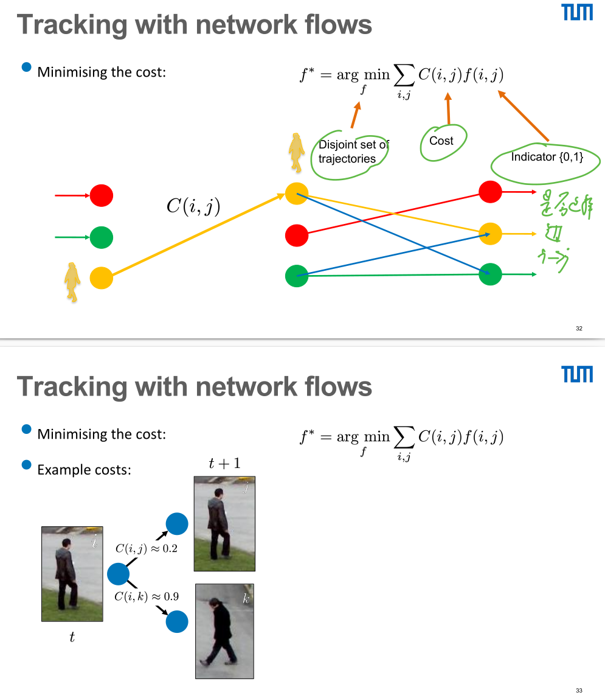
costs的例子：同一个人在 \(t\) 和 \(t+1\) 的两个检测，\(C(i,j) \approx 0.2\)（像， 代价低）；和另一个人 \(C(i,k) \approx 0.9\)（不像，代价高）。
5.2 Constructing the cost-flow network
Transition cost \(C_t\)（帧间的边）：
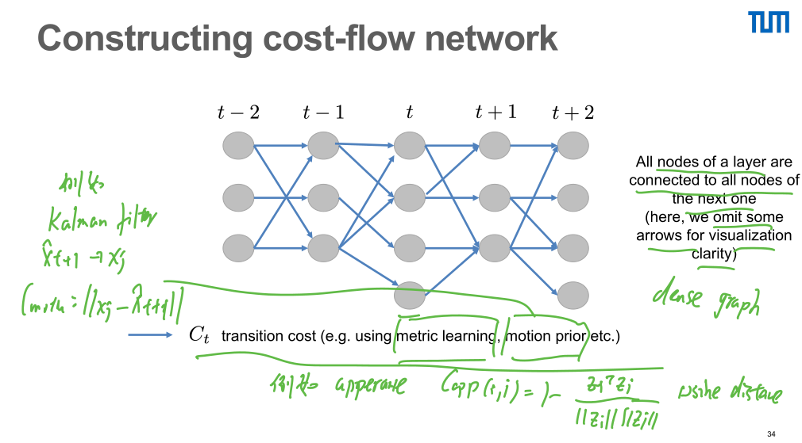
一层的所有node连到下一层的所有node（dense graph，图上省略了部分箭头）。 \(C_t\) 可以用：
- Motion：比如Kalman filter预测 \(\hat{x}_{t+1}\)，代价是 \(\|x_j - \hat{x}_{t+1}\|\)
- Appearance：用metric learning学到的embedding算cosine distance， \(C_{app}(i,j) = 1 - \frac{z_i^\top z_j}{\|z_i\| \|z_j\|}\)
Source和sink：
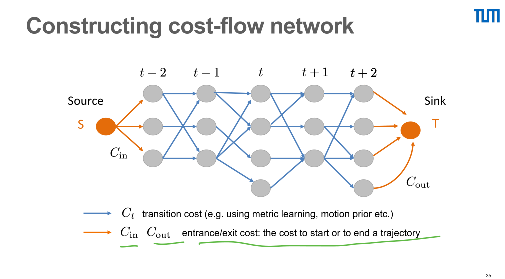
加两个特殊节点：source \(S\) 和sink \(T\)。
- \(C_{in}\)：entrance cost，开启一条轨迹的代价
- \(C_{out}\)：exit cost，结束一条轨迹的代价
Trajectory的定义：a path starting at S and ending at T。 Trajectories are disjoint ordered sets（互不相交的有序集合）：
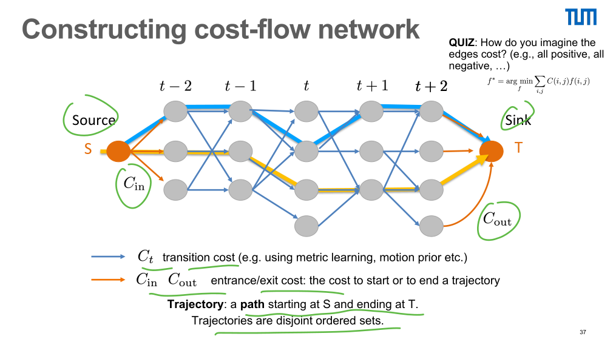
QUIZedge的cost应该是什么符号？（全正、全负、还是都有）
必须有正有负。如果所有代价都是正的，那么最优解就是"一条轨迹都不要" （总代价0最小）；必须有负代价的边来"奖励"合理的关联，才会真的连出轨迹。
Open question: 怎么把detection confidence也放进去？
解决办法：把node拆成两个，中间连一条边，赋予detection cost \(C_{det}\)：
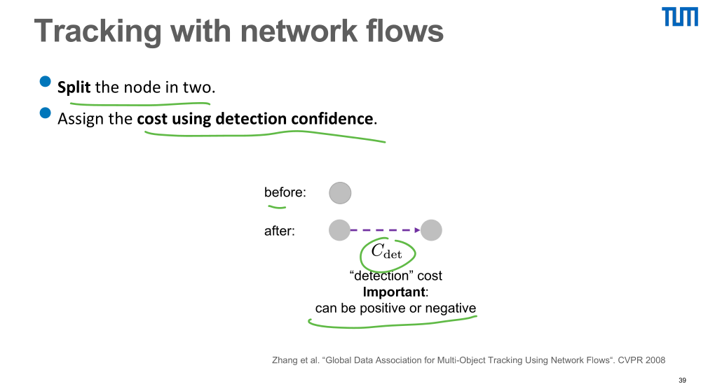
\(C_{det}\) can be positive or negative：置信度高的检测给负代价（鼓励使用）， 置信度低的给正代价（抑制）。
5.3 Complete graph and occlusions
完整的图长这样：
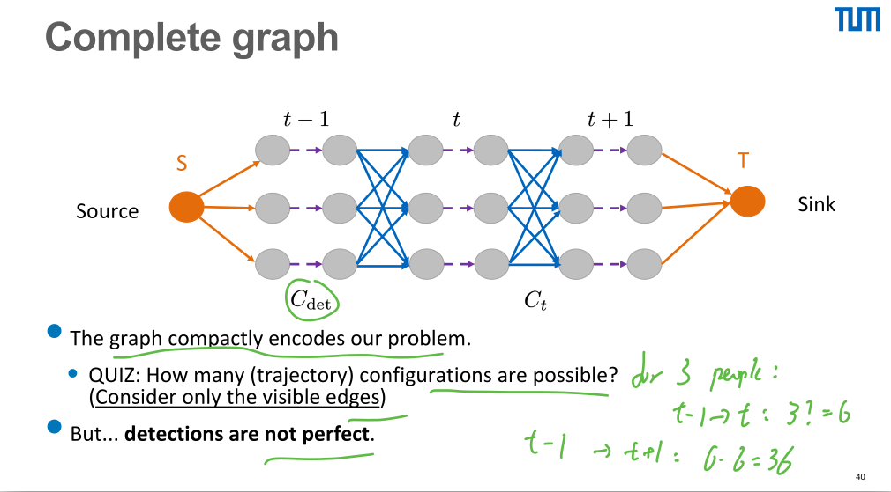
QUIZ有多少种（轨迹）配置是可能的？（只考虑可见的边）
以3个人为例：\(t-1 \to t\) 有 \(3! = 6\) 种匹配，\(t \to t+1\) 又是6种， 所以 \(t-1 \to t+1\) 一共 \(6 \times 6 = 36\) 种配置。可见组合爆炸， 这正是需要高效优化算法的原因。
但是……detections are not perfect。如果有遮挡，我们只能找到两条轨迹：
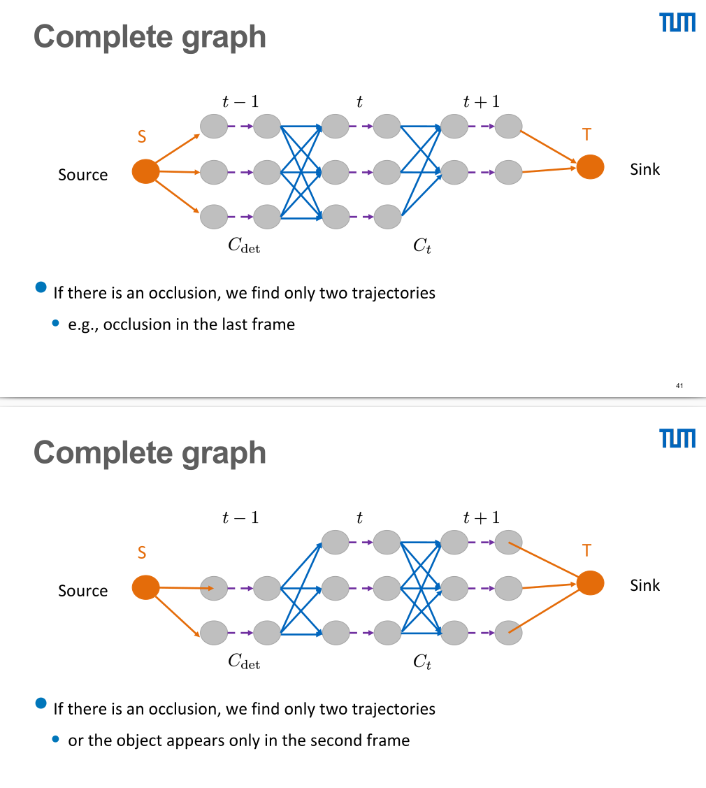
比如最后一帧发生遮挡，或者物体只在第二帧才出现。解决办法：把 所有node都连到entrance/exit节点，这样轨迹可以在任意时刻开始或结束。
Constraints（flow conservation）：
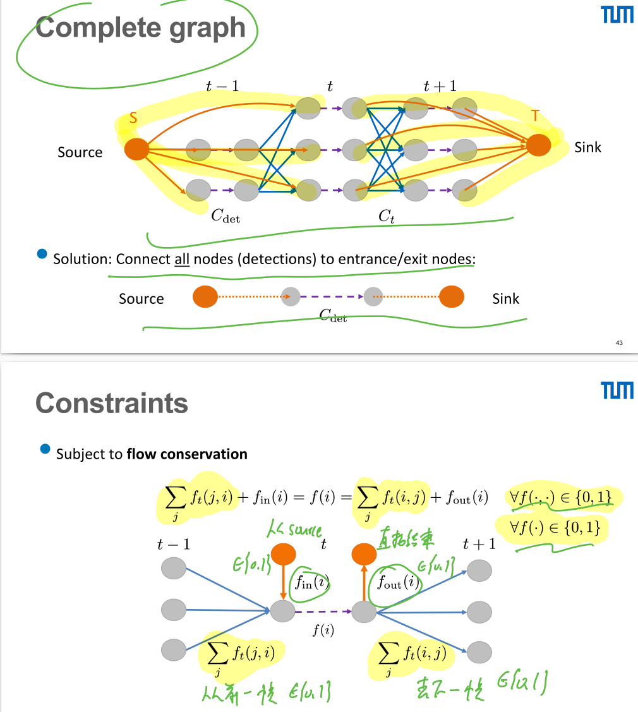
意思是流入 = 流出：一个detection node的入流（来自前一帧的边，或者来自 source）必须等于出流（去往后一帧的边，或者去往sink）。这个约束保证了 每个detection最多属于一条轨迹。
5.4 MAP formulation
这个图优化问题和2.x的贝叶斯框架是相通的：
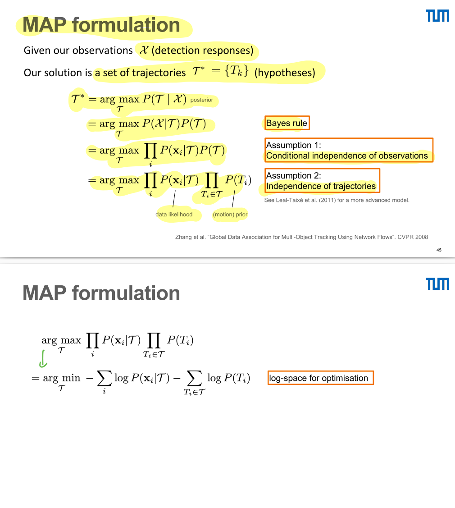
给定observations \(\mathcal{X}\)（detection responses），解是一组trajectories \(\mathcal{T}^* = \{T_k\}\)（hypotheses）：
其中 \(\prod_i P(\mathbf{x}_i \mid \mathcal{T})\) 是data likelihood， \(\prod_{T_i} P(T_i)\) 是(motion) prior。
取负对数转到log-space做优化（乘法变加法）：
怎么建模prior和likelihood？
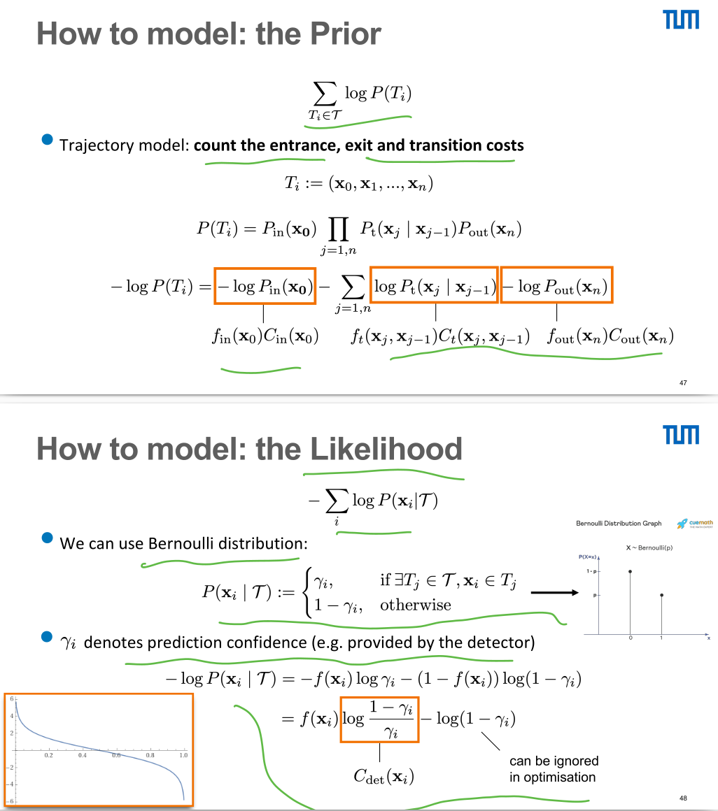
Prior（trajectory model）：count the entrance, exit and transition costs。 对 \(T_i := (\mathbf{x}_0, \mathbf{x}_1, \dots, \mathbf{x}_n)\)：
取负对数后，三项正好对应图里的三种边： \(-\log P_{in} \to f_{in} C_{in}\)、\(-\log P_t \to f_t C_t\)、 \(-\log P_{out} \to f_{out} C_{out}\)。
Likelihood：用Bernoulli分布建模：
\(\gamma_i\) 是prediction confidence（检测器给的）。展开负对数：
关键：\(C_{det} = \log\frac{1-\gamma_i}{\gamma_i}\)，当 \(\gamma_i > 0.5\) 时 它是负的（鼓励使用这个检测），\(\gamma_i < 0.5\) 时是正的。这正好回答了 5.2的Quiz——代价必须有正有负，而且它是从概率模型里自然推导出来的。
5.5 Optimisation
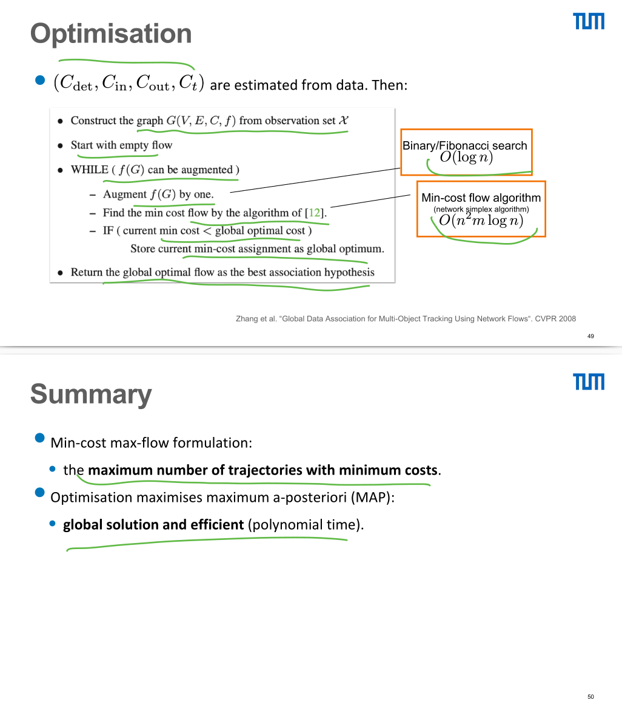
\((C_{det}, C_{in}, C_{out}, C_t)\) 从数据估计出来之后：
- 从observation set \(\mathcal{X}\) 构造图 \(G(V, E, C, f)\)
- 从空流开始
- WHILE（\(f(G)\) 还能augment）：把flow加1（即多找一条轨迹），用min-cost flow算法求当前的最优解，如果当前min cost < 全局最优则记录
- 返回全局最优流作为best association hypothesis
复杂度：外层用binary/Fibonacci search是 \(O(\log n)\)， min-cost flow算法（network simplex）是 \(O(n^2 m \log n)\)。
Summary：
- Min-cost max-flow formulation：最多的轨迹数配上最小的代价
- 优化过程最大化MAP：全局解且高效（多项式时间）
5.6 Handling occlusions and open questions
怎么处理遮挡？ "Markovian" formulation可能不够用：
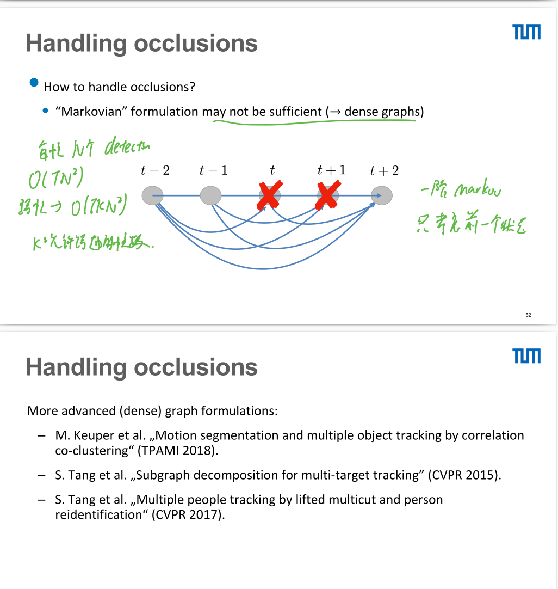
一阶Markov只考虑前一个状态，物体被遮挡两帧就断了。解决办法是加 skip edges（跨越多帧的边），形成dense graph。复杂度代价：每帧N个 detection、T帧，原本是 \(O(TN^2)\)，允许跨K帧后变成 \(O(TKN^2)\)。
更进阶的dense graph formulation可以看：Keuper et al.（TPAMI 2018， correlation co-clustering）、Tang et al.（CVPR 2015 subgraph decomposition； CVPR 2017 lifted multicut）。
Open questions：
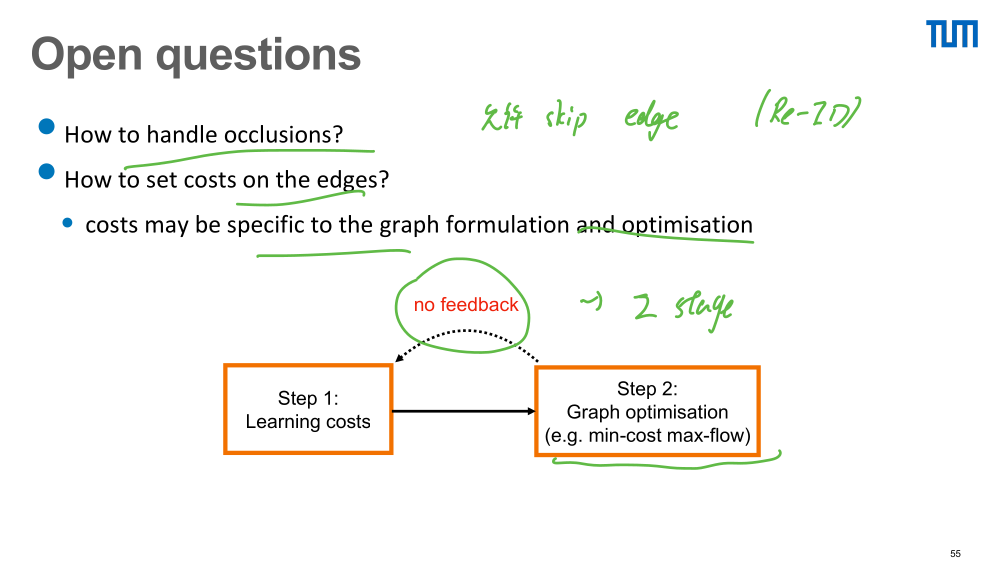
- 怎么处理遮挡？（skip edge加ReID）
- 怎么设置边上的cost？ costs可能和具体的graph formulation、优化方法有关
最根本的问题是这是个两阶段流程：Step 1学costs、Step 2做图优化， 两步之间没有feedback。优化的结果无法回过头改进cost的学习。
5.7 End-to-end learning: message passing networks
能不能直接在图上学特征（编码costs）来编码解？
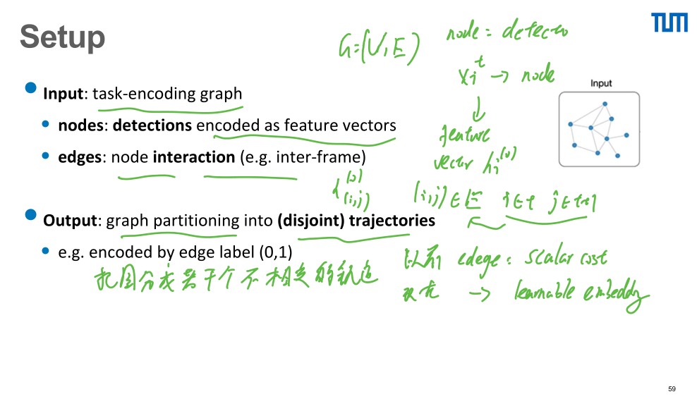
Goal：泛化我们用的graph structure，做end-to-end learning，也就是把 feature learning和graph reasoning一起做。
Setup：
- Input：task-encoding graph \(G = (V, E)\)
- nodes：detections编码成feature vector \(h_i^{(0)}\)
- edges：node interaction（比如inter-frame）， \((i,j) \in E\)，\(i \in t\)，\(j \in t+1\)
- Output：graph partitioning into disjoint trajectories， 用edge label \(y_{ij} \in \{0,1\}\) 编码（1表示detection \(i\)、\(j\) 属于同一条 轨迹）
对比之前：以前每条edge是一个scalar cost，现在是一个learnable embedding。
为什么不能直接用MLP或CNN？
- MLP：图的大小会变（node和edge数量不固定），而且node没有固定顺序 （"which order?"），MLP要求固定维度的输入
- CNN：CNN能处理任意大小的图像、不要求顺序，但它依赖网格结构 （"which grid?"），图没有局部网格结构
Key challenges：
- Graph can be of arbitrary size（node和edge数量任意）
- Need invariance to node permutations
- No fixed structure（不像CNN的grid、MLP的order）
这属于Geometric Deep Learning的范畴 （Bronstein et al., 2021）：grids （欧氏样本，如图像）、groups（有全局对称性的齐次空间，如球面）、 graphs（节点和连接，如社交网络）、geodesics & gauges（流形，如3D mesh）：
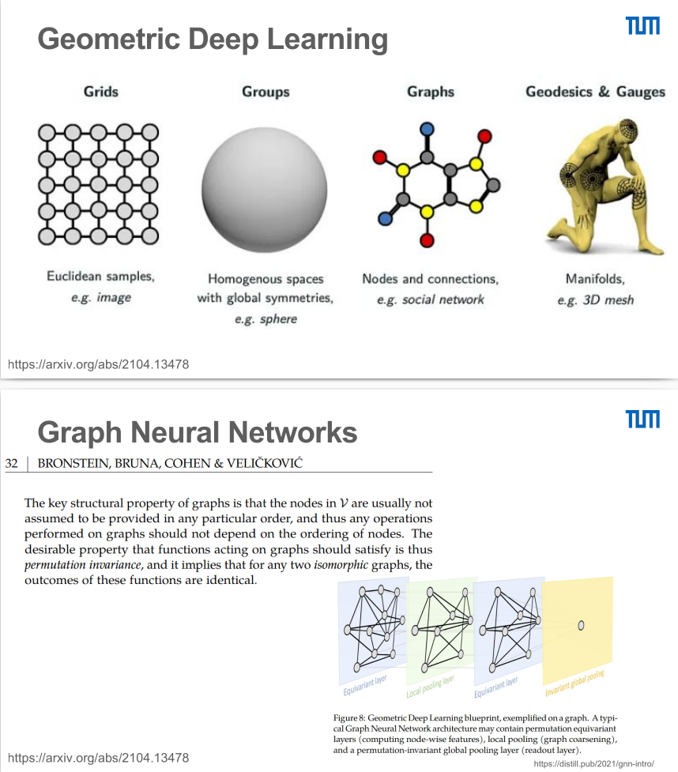
Message Passing Networks (MPN) 就是为图设计的答案：
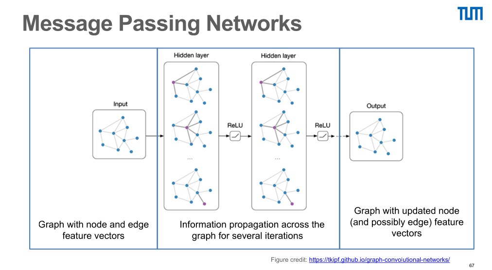
输入是带node和edge feature vector的图，中间在图上传播信息若干轮， 输出是更新后的node（和edge）feature vector。
5.8 The message passing algorithm
传播过程分两步交替进行：node-to-edge和edge-to-node updates：
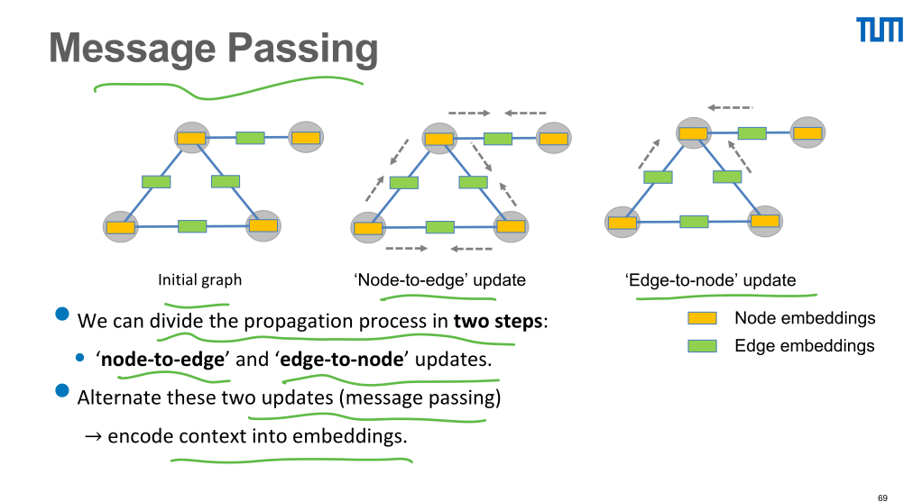
Notation：
- Graph：\(G = (V, E)\)
- 初始embedding：node \(h_i^{(0)}, i \in V\)；edge \(h_{(i,j)}^{(0)}, (i,j) \in E\)
- \(l\) 步之后：\(h_i^{(l)}\)、\(h_{(i,j)}^{(l)}\)
Step 1: node-to-edge update：
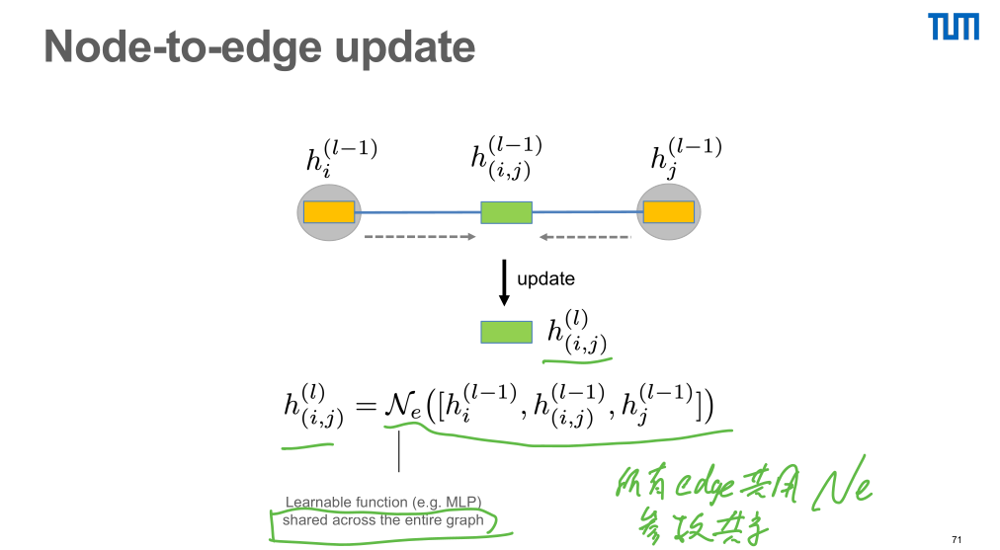
\(\mathcal{N}_e\) 是一个learnable function（比如MLP），在整个图上共享参数。 把边两端的node embedding和边自己的embedding拼起来过MLP。
Step 2: edge-to-node update：
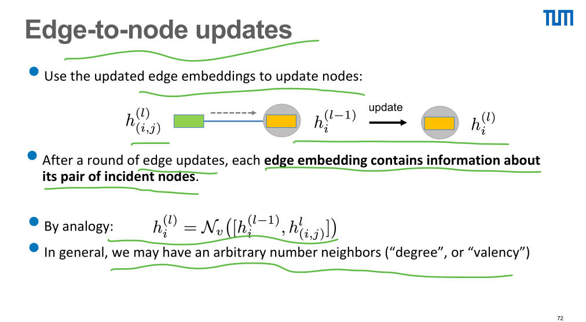
一轮edge update之后，每条edge embedding都包含了它两端node的信息。 按类比可以写 \(h_i^{(l)} = \mathcal{N}_v([h_i^{(l-1)}, h_{(i,j)}^{l}])\)， 但是：一个node一般有任意数量的邻居（degree/valency不固定）。
所以需要一个permutation-invariant的aggregation function：
输入是incident edge的embedding组成的set。
Quiz: 为什么不直接concatenate所有neighbor？ 因为邻居数量不固定， 而且concatenate的结果依赖顺序，破坏permutation invariance。
QUIZ哪些函数是permutation-invariant的？
sum、mean、max（比如 \(a + b + c = b + c + a\)）。这正是PointNet （Qi et al., 2017）处理点云用的技巧。
于是general graph的edge-to-node update是：
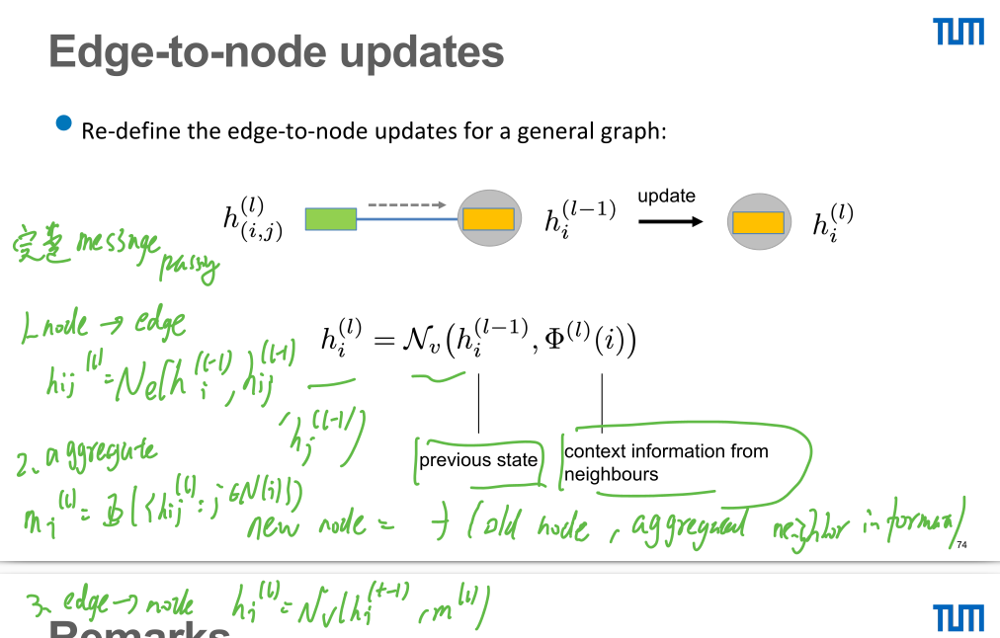
即new node = f(old node, aggregated neighbor information)，两项分别是 previous state和context information from neighbours。
完整的message passing一轮：
- node → edge：\(h_{ij}^{(l)} = \mathcal{N}_e([h_i^{(l-1)}, h_{ij}^{(l-1)}, h_j^{(l-1)}])\)
- aggregate：\(m_i^{(l)} = \Phi(\{h_{ij}^{(l)}\}_{j \in Ne(i)})\)
- edge → node：\(h_i^{(l)} = \mathcal{N}_v(h_i^{(l-1)}, m_i^{(l)})\)
Remarks：
- Main goal：把context information聚合进node和edge embedding
- 一轮更新让node/edge的receptive field增加1，所以实践中要迭代多次 （L轮 = L-hop的receptive field，是个hyperparameter）
- 所有操作都可微（\(\mathcal{N}_e\)、\(\mathcal{N}_v\) 是MLP，aggregation是 sum/mean/max，都能backprop）
- 所有vertices/edges平等对待，即参数共享
L轮之后，\(h_{ij}^{(L)}\) 就是context-aware的edge embedding，可以直接 预测 \(p_{ij} = \sigma(\text{MLP}_{cls}(h_{ij}^{(L)})) \in [0,1]\)。
Additional reading：Scarselli et al.（GNN, 2009）、 Kipf & Welling（GCN, ICLR 2017）、 Gilmer et al.（MPNN, ICML 2017）、 Battaglia et al.（relational inductive biases, 2018 review）。
5.9 MOT with message passing networks
Brasó & Leal-Taixé, 2020（就是本课程组的 工作）把上面这套用到MOT：
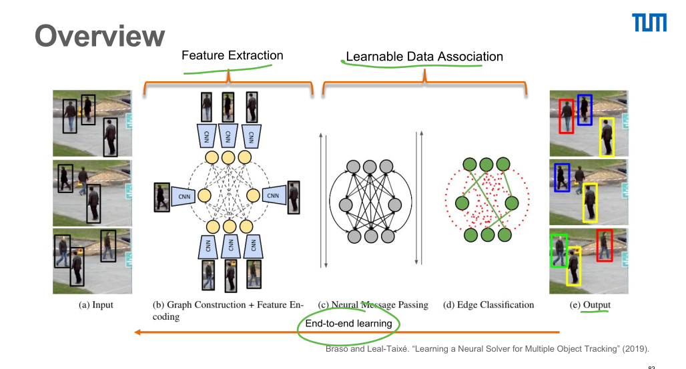
流程：(a) input → (b) graph construction + feature encoding → (c) neural message passing → (d) edge classification → (e) output，整条链路 end-to-end learning。
三句话概括：把appearance和scene geometry线索编码进node和edge embedding； 用neural message passing把线索传播到整张图；通过分类edge embedding 直接预测min-cost flow问题的解。
Feature encoding：
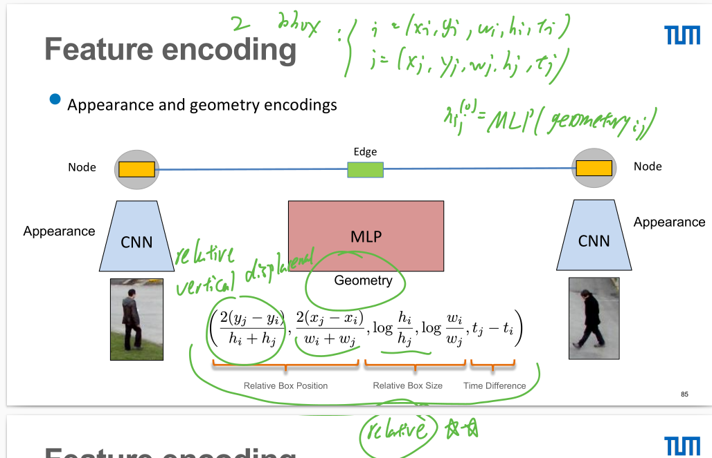
- Node（appearance）：detection crop过CNN
- Edge（geometry）：两个box \(i = (x_i, y_i, w_i, h_i, t_i)\)、 \(j = (x_j, y_j, w_j, h_j, t_j)\) 的相对几何量过MLP：
注意全部是relative的量（位置差除以尺寸、尺寸取log比、时间差），这样 对绝对位置和尺度不敏感。
Temporal causality：
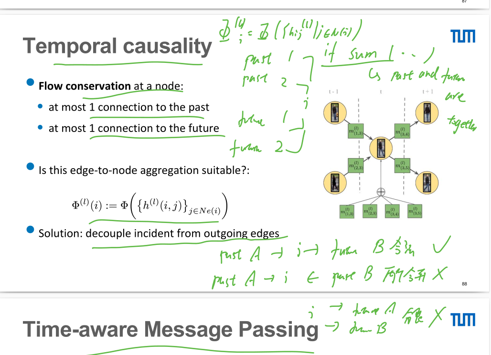
flow conservation要求一个node至多1条连向过去、至多1条连向未来的边。 但普通的aggregation \(\Phi^{(l)}(i) = \Phi(\{h^{(l)}(i,j)\}_{j \in Ne(i)})\) 把过去和未来的边混在一起求和了，这样就无法区分"past A → i → future B" （合法）和"past A → i ← past B"（非法，两个过去的检测都连到i）。
Solution: decouple incident from outgoing edges，即time-aware message passing：
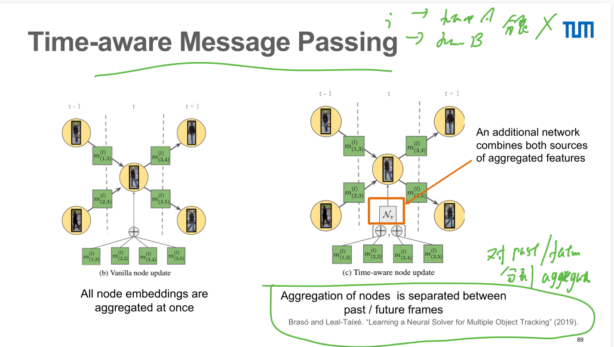
把邻居分成past和future两组分别aggregate，再用一个额外的网络 \(\mathcal{N}_v\) 把两路结果合起来。
Classifying edges：
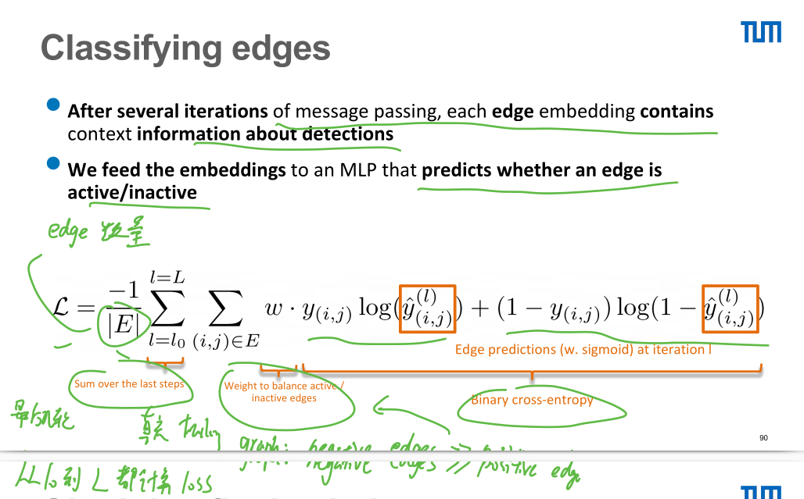
逐项：
- \(\sum_{l=l_0}^{L}\)：对最后几轮message passing都算loss（deep supervision， 让中间层也学到有用的表示）
- \(w\)：平衡active/inactive边的权重。因为图里negative edges远多于 positive edges（大部分候选关联都是错的）
- 中间是标准的binary cross-entropy，\(\hat{y}^{(l)}\) 是第 \(l\) 轮的 edge prediction（过sigmoid）
Obtaining final solutions：
分类完每条边得到0到1之间的预测，但直接thresholding不保证满足flow conservation约束（learned consistency ≠ guaranteed consistency）。 实践中约98%的约束会自动满足，剩下的用轻量post-processing （rounding或linear programming）修正：比如一个node有两条future edge分别是 0.91和0.83，就保留0.91那条。
整体方法很快（约12 fps）且在MOT challenge上大幅领先。
Summary：
- 对graph structure没有强假设，能处理遮挡
- costs从数据中学
- 准确且快（对offline tracker而言）
- (几乎) end-to-end，还需要一点post-processing
6. MOT evaluation
Evaluation metrics的第一步：per frame地在prediction和ground truth 之间做匹配：
给定GT \(T = \{g_i\}\) 和prediction \(P = \{p_j\}\)，代价 \(C_{ij} = 1 - IoU(g_i, p_j)\)，用Hungarian algorithm（又是它）匹配， 配合一个IoU threshold。得到三类错误：
- FP = false positives
- FN = false negatives（漏检）
- IDSW = "identity switches"（身份跳变）
怎么计算ID switch？
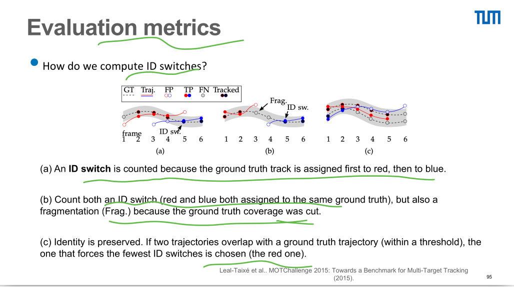
- (a) 一条GT轨迹先被分配给红色、后被分配给蓝色，记一次ID switch
- (b) 既记一次ID switch（红蓝都分配给了同一条GT），又记一次 fragmentation（GT的覆盖被切断了）
- (c) Identity is preserved：如果两条轨迹都和GT重叠（在阈值内）， 选导致ID switch最少的那条（红色）
三个核心指标：
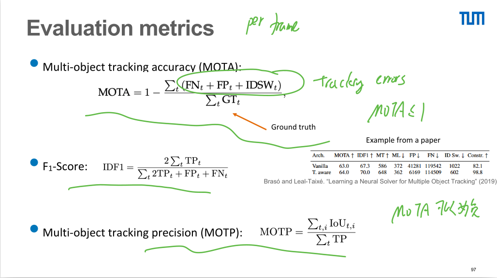
MOTA（multi-object tracking accuracy）：分子是所有tracking errors， 分母是GT总数。注意 \(\text{MOTA} \le 1\)，而且可以是负的（错误比GT还多时）。 它主要衡量检测质量（FN和FP占大头，IDSW通常小得多）。
IDF1：F1-score的形式，更关注identity保持得好不好。
MOTP（multi-object tracking precision）：匹配上的框的平均IoU，衡量 定位精度（而不是关联质量）。
论文里的对比表（Brasó & Leal-Taixé 2019）：vanilla vs time-aware的MPN， MOTA 63.0 → 64.0、IDF1 67.3 → 70.0、ID switches 1022 → 602、 constraint satisfaction 82.1 → 98.8，可以看到time-aware message passing 主要改善的是identity相关的指标。
Datasets：
- MOTChallenge：motchallenge.net（行人）
- KITTI：cvlibs.net/datasets/kitti（车辆）
- UA-Detrac（车辆）
每个benchmark有各自的挑战。Unbiased view：在所有数据集上都有 高/有竞争力的准确率才是我们想要的。
7. Tracking SoTA
课件最后给了一张MOT方法的分类图（Guan et al., 2025的综述）：
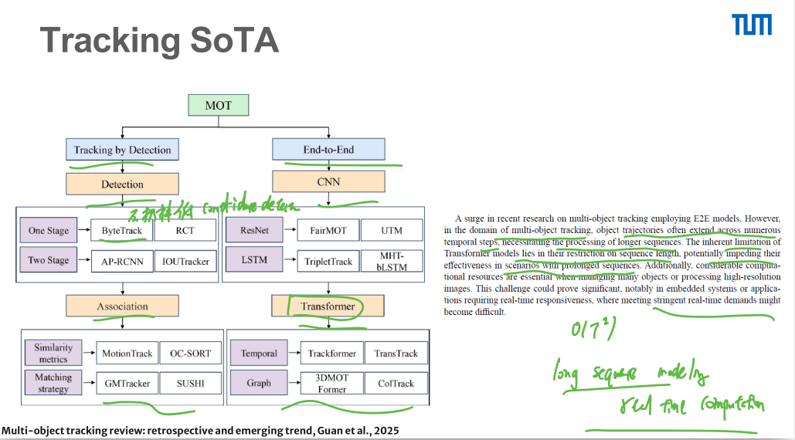
两大分支：
- Tracking by Detection：detection（one-stage如ByteTrack/RCT、two-stage如 AP-RCNN/IOUTracker）+ association（similarity metrics如MotionTrack/OC-SORT、 matching strategy如GMTracker/SUSHI）
- End-to-End：CNN（ResNet系、LSTM系）和Transformer（temporal的 TrackFormer/TransTrack、graph的3DMOTFormer/ColTrack）
综述指出的E2E模型的局限：MOT的轨迹往往跨越很多时间步，需要处理长序列， 而transformer受限于序列长度（attention复杂度 \(O(T^2)\)），在长序列场景 效果受限；另外处理很多物体或高分辨率图像时计算资源开销大，在嵌入式 系统或严格实时的应用里可能成为瓶颈。
这条线之后的发展（TrackFormer、MOTR、ByteTrack、SUSHI、MOTIP等）我写在了 note 4的1.9节，那里按时间顺序补到了2026年。
References
- Held et al. Learning to Track at 100 FPS with Deep Regression Networks (GOTURN). ECCV 2016.
- Nam & Han. Learning Multi-Domain Convolutional Neural Networks for Visual Tracking (MDNet). CVPR 2016.
- Bergmann et al. Tracking without bells and whistles (Tracktor). ICCV 2019.
- Zhang, Li & Nevatia. Global Data Association for Multi-Object Tracking Using Network Flows. CVPR 2008.
- Brasó & Leal-Taixé. Learning a Neural Solver for Multiple Object Tracking (MPN). CVPR 2020.
- Chopra et al. Learning a Similarity Metric Discriminatively, with Application to Face Verification. CVPR 2005.
- Bronstein et al. Geometric Deep Learning: Grids, Groups, Graphs, Geodesics, and Gauges. 2021.
- Kipf & Welling. Semi-Supervised Classification with Graph Convolutional Networks. ICLR 2017.
- Gilmer et al. Neural Message Passing for Quantum Chemistry. ICML 2017.
- Battaglia et al. Relational Inductive Biases, Deep Learning, and Graph Networks. 2018.
- Qi et al. PointNet: Deep Learning on Point Sets for 3D Classification and Segmentation. CVPR 2017.
- Leal-Taixé et al. MOTChallenge 2015: Towards a Benchmark for Multi-Target Tracking. 2015.
- Keuper et al. Motion Segmentation and Multiple Object Tracking by Correlation Co-Clustering. TPAMI 2018.
- Tang et al. Multiple People Tracking by Lifted Multicut and Person Re-identification. CVPR 2017.
Additional reading (optional)
- Ning et al. Spatially Supervised Recurrent Convolutional Neural Networks for Visual Object Tracking. ISCAS 2017.
- Elezi et al. The Group Loss for Deep Metric Learning. ECCV 2020.
- Manmatha et al. Sampling Matters in Deep Embedding Learning. ICCV 2017.
- Wang et al. Multi-Similarity Loss with General Pair Weighting for Deep Metric Learning. CVPR 2019.
- Leal-Taixé et al. Learning by Tracking: Siamese CNN for Robust Target Association. CVPRW 2016.
- Schulter et al. Deep Network Flow for Multi-Object Tracking. CVPR 2017.
Comments